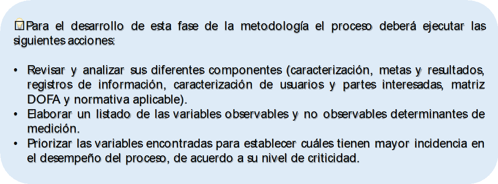

4.1 Entendimiento del proceso e identificación de variables observables y no observables determinantes para la medición
Antes de iniciar con la definición de los indicadores de gestión asociados a un proceso en particular, es necesario hacer un análisis exhaustivo de aquello que se pretende medir. Por lo que se requiere un entendimiento de dicho proceso desagregándolo en sus diferentes componentes, los cuales se encuentren definidos en las siguientes fuentes de información:
Caracterización de proceso: En este documento se presenta el objetivo con el cual se establece la intensión y finalidad hacia la que se dirigen los recursos y esfuerzos involucrados en su operación de manera descriptiva y concreta, al tiempo que se describen sus entradas o insumos requeridos, los productos o servicios que se espera obtener, las diferentes fases del ciclo PHVA y los responsables de su ejecución.
Las metas y resultados que se propone alcanzar los cuales se encuentran inmersos tanto en los procedimientos como en planes y proyectos.
Las herramientas tanto informáticas como documentales (formatos) en las que se registran los datos que dan cuenta de la ejecución del proceso para establecer posibles fuentes de información.
La caracterización de usuarios y partes interesadas en la que se establecen cuales son sus grupos de interés con sus necesidades y expectativas, así como los productos y servicios esperados.
La matriz DOFA con el análisis de contexto en el que se enuncian sus debilidades, oportunidades, fortalezas y amenazas. En la esfera externa del proceso se pueden identificar las habilidades que se requieren para se exitoso, mientras que a nivel interno se pueden identificar las situaciones que pueden influir en su éxito o fracaso.
El normograma con la normativa aplicable en la que se establecen aquellos aspectos que el proceso debe cumplir en términos legales.
Una vez se tiene claridad de las características del proceso en particular, se requiere establecer cuales variables observables y no observables son determinantes para su medición, es decir, cuales son los atributos, aspectos o condiciones tanto internas como externas que se pueden influenciar a través de decisiones al tiempo que afectan significativamente el cumplimiento de su objetivo. En otras palabras, se podría decir que si los objetivos son los fines hacia los cuales se dirigen los esfuerzos y recursos institucionales, las variables observables y no observables determinantes para su medición son los medios a través de los cuales dichos fines se logran.
A partir de este análisis es posible obtener un listado de aspectos más o menos numeroso, el cual debe ser priorizado y calificado en relación con la relevancia que tiene para el proceso con el fin de decantar la información inicial y enfocarse en aquellos que tiene mayor incidencia en su desempeño global. Para lograrlo se debe evitar que las variables resultantes contengan elementos redundantes y procurar porque sean coherentes entre si para lograr un balance entre la cantidad y la calidad de la información.
En la práctica, para el desarrollo de esta fase se requerirán sesiones de trabajo con funcionarios involucrados en el proceso, quienes de acuerdo con su nivel de experiencia y conocimiento podrán aportar a la construcción del listado de variables observables y no observables y su posterior depuración, las cuales serán usadas como punto de partida para la definición de los indicadores de gestión.
Si bien las variables observables y no observables determinantes de medición son específicas para cada objetivo de proceso y cada tipo de entidad a continuación, se enuncian posibles categorías en las que estas se pueden clasificar acompañadas de ejemplos relacionados con el contexto de la Universidad:
Tiempo: Oportunidad en la prestación del servicio.
Cobertura: Incremento en el número de estudiantes matriculados, número de beneficiarios de programas de bienestar, número de usuarios de un servicio específico.
Financiero: Costos de operación.
Cumplimiento: Avance en las acciones o actividades programadas, ejecuciones de actividades específicas.
Calidad: Número de devoluciones, reprocesos, acreditación de programas curriculares, incumplimiento de estándares o especificaciones.
Cantidad: Productos de investigación, publicaciones, patentes.
Constructos o conceptos: Competencia del talento humano, comunicación organizacional, desarrollo y desempeño docente.
Otras: Deserción estudiantil, repetición de materias, alianzas interinstitucionales y empresariales, intercambio estudiantil o docente.
Así mismo en la Figura 4.2 se proponen 4 perspectivas o dimensiones en las que se podría enmarcar el desempeño de un proceso en la UNAL (véase Bolborici (2012)) , de tal manera que se pueda hacer un análisis desde múltiples puntos de vista para traducir sus objetivos en acciones concretas y medibles orientadas a la creación de valor, facilitando la identificación de las variables determinantes de medición:
Figure 4.2: Perspectivas para la ubicación de las variables determinantes de medición
En el anexo 1 de esta guía se propone un método de evaluación de la criticidad de las variables determinantes de medición para su priorización de acuerdo con tres criterios como son el impacto que la variable tiene sobre el objetivo del proceso, la confiabilidad de los datos para su medición y el último es la capacidad de gestión sobre la variable. Este método podrá utilizarse para facilitar la selección de variables asociadas a un proceso en caso de tener un listado numeroso.
Por otra parte conviene mencionar en este apartado que en los diferentes modelos estudiados para la construcción de esta guía se presentan diversas estructuras para la clasificación de los indicadores de gestión, como el caso de la Función Pública (2015), que muestra un enfoque desde la visión de la cadena de valor, donde se ubican las tipologías de indicadores de acuerdo a su relación con cada eslabón de dicha cadena (Ver figura 4.3: Categoría de indicadores de acuerdo a su ubicación en la cadena de valor público propuesta por el DAFP). En esta jerarquía se proponen indicadores desde el punto de vista del desempeño (economía, eficiencia, eficacia, efectividad y calidad), y desde el punto de vista de resultados (insumo, proceso, producto, resultados finales e impacto) asociados a un flujo de información que se dirige en el sentido de la operación de los procesos (de izquierda a derecha).
Figure 4.3: Categoría de indicadores de acuerdo a su ubicación en la cadena de valor público propuesta por el DAFP
Tomado de Pública (2015).
De modo similar la guía del Departamento Nacional de Planeación (Sanchez O. y Salazar A. y Lopez (2018)) propone una clasificación de los indicadores asociada a la cadena de generación de valor público (Ver figura 4.4: Categorías de indicadores con base en la cadena de valor de acuerdo al DNP), donde se relacionan los insumos (factores de producción) con actividades a través de las cuales sufren un proceso de transformación para la generación de bienes o la prestación de servicios (productos) que finalmente conllevan al bienestar de los usuarios finales (resultados). La estructura de esta categorización de indicadores es tipo embudo en la que se inicia de arriba hacia abajo con tipologías que van de mayor a menor complejidad en su estructura.
Figure 4.4: Categorías de indicadores con base en la cadena de valor de acuerdo con el DNP
Tomado de Sanchez O. y Salazar A. y Lopez (2018).
Por su parte, la guía para la construcción de indicadores del DANE, según DANE (2014) establece que existen cuatro tipos de clasificaciones comunes: según medición, nivel de intervención, jerarquía y calidad (Ver figura 4.5: Interrelación entre indicadores, según nivel de resultados y jerarquía), haciendo la salvedad que no son excluyentes entre si y que se pueden usar de acuerdo con las necesidades de los procesos estadísticos de las entidades. Los indicadores según su medición se categorizan en cuantitativos y cualitativos, en cuanto al nivel de intervención se dispone de las tipologías impacto, resultado, producto, proceso e insumo, según la jerarquía se tienen indicadores de gestión y estratégicos y finalmente se tienen las categorías de indicadores según la calidad como son eficacia, eficiencia y efectividad. En este caso la estructura es piramidal de abajo hacia arriba del menos al más estratégico de acuerdo con su relación con la jerarquía de los objetivos de la entidad.
Figure 4.5: : Interrelación entre indicadores, según nivel de resultados y jerarquía
Tomado de DANE (2014).
Como otro referente se tiene la taxonomía propuesta por la CEPAL en su manual de indicadores para el sector público que incluye dos formas de clasificación diferentes (véase Bonnefoy (2005)), la primera a indicadores desde el punto de vista de la actuación pública en la generación de productos como son insumo, procesos o actividades, productos y resultados finales y la segunda los cataloga de acuerdo con el desempeño es estas actuaciones en las dimensiones de eficiencia, eficacia, calidad y economía. Gráficamente esta distribución se presenta como una red de interrelaciones entre ambas categorías de indicadores desde la perspectiva del proceso productivo integrado a los niveles de servicio, al uso de recursos y la satisfacción de los usuarios (Ver figura 4.6: Taxonomía de indicadores desde la perspectiva del proceso productivo según CEPAL).
Figure 4.6: : Taxonomía de indicadores desde la perspectiva del proceso productivo según CEPAL
Tomado de Bonnefoy (2005).
Finalmente, según Coneval (2013) considera cuatro dimensiones de desempeño: eficacia, eficiencia, calidad y economía que permiten medir el cumplimiento de un objetivo en relación con el nivel de logro que se espera alcanzar, de tal manera que el análisis desde diversos ángulos muestre una valoración integral del mismo (Ver figura 4.7: Dimensiones sugeridas de los indicadores CONEVAL). Este enfoque relaciona los momentos en los que se realiza la medición (cuándo) con aquello que se está midiendo (qué) para establecer que tipo de indicador es recomendable.
Figure 4.7: Dimensiones sugeridas de los indicadores CONEVAL
Tomado de Coneval (2013).

Referencias
Bolborici, Monica Mihaela. 2012. “La Aplicación Del Cuadro de Mando En Las Entidades Públicas: Un Estudio de Caso.” Zaragoza: Universidad de Zaragoza.
Bonnefoy, Marianela, Juan Cristóbal y Armijo. 2005. Indicadores de Desempeño En El Sector Público. ILPES.
Coneval, CN. 2013. “Manual Para El Diseño Y La Construcción de Indicadores. Instrumentos Principales Para El Monitoreo de Programas Sociales de México.” Coneval Ciudad de México, México.
DANE, DA. 2014. “Guı́a Para Diseño, Construcción E Interpretación de Indicadores.” Bgotá.
Pública, Función. 2015. “Guı́a Para La Construcción Y análisis de Indicadores de Gestión.” Departamento Administrativo, Bogota. Recuperado El 27.
Sanchez O. y Salazar A. y Lopez, J. 2018. “Guı́a Para La Construcción Y análisis de Indicadores Y.” Departamento Nacional de Planeación, Bogota.